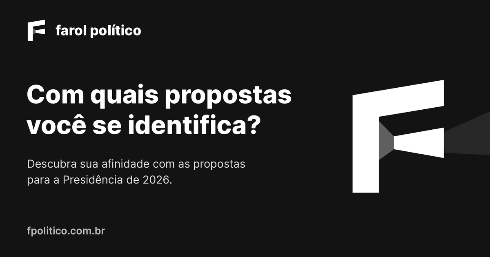
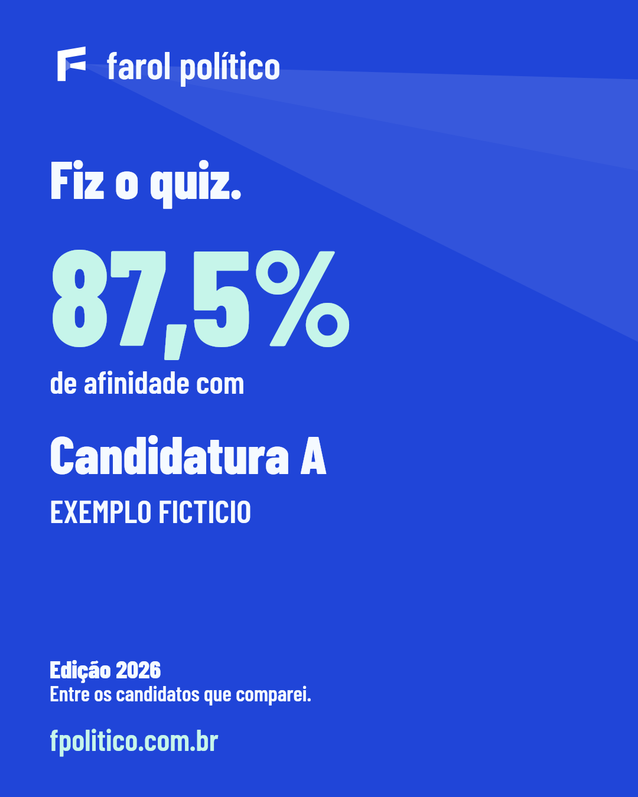
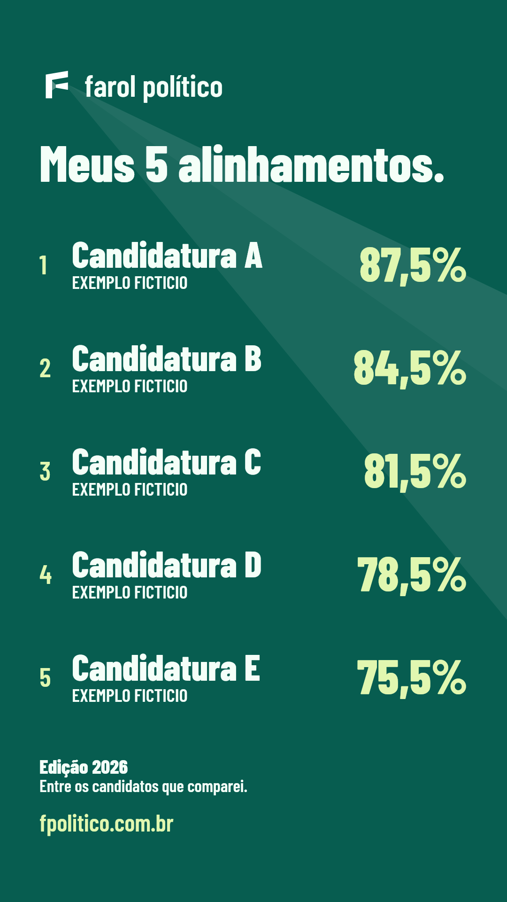
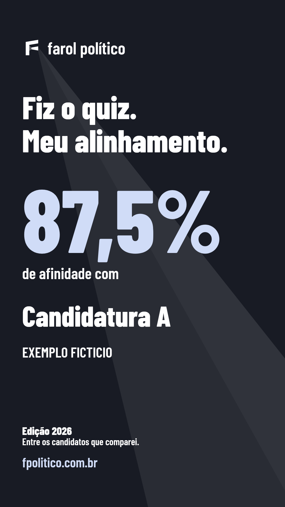
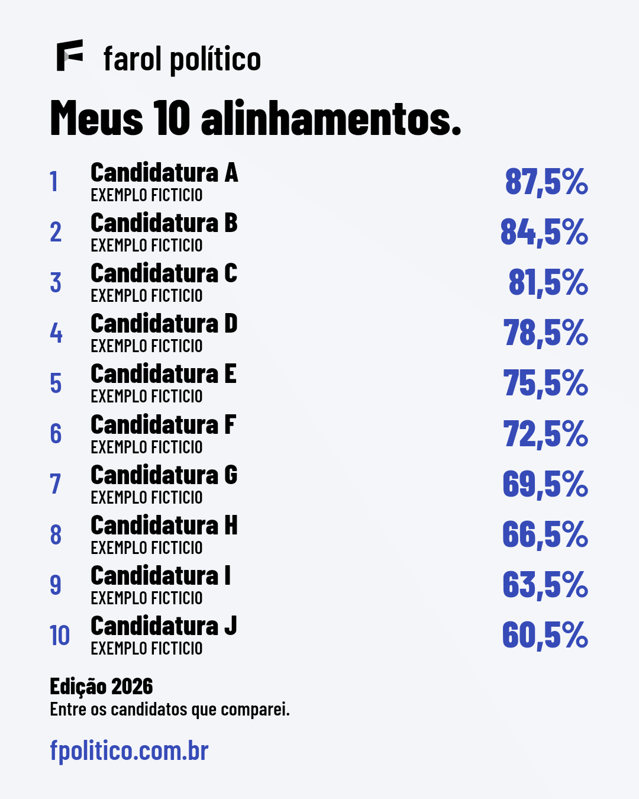
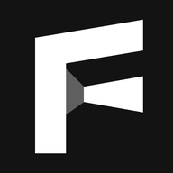

Feixe aplicado ao projeto.
Estes são os arquivos de referência entregues no PR #63: preview institucional vetorial exportado e cards renderizados pelo próprio Flutter. Dados fictícios apenas para a revisão. A identidade e a atualização mínima dos cards estão publicadas.
Preview do link

1200 × 630 · Inter · fundo carvão · marca branca e abertura translúcida.
Cards reais do aplicativo
A direção é sorteada ao abrir o compartilhamento e mantida até o envio. As cores, a Barlow Condensed, o conteúdo e os controles originais continuam.








Ícones em tamanho real
